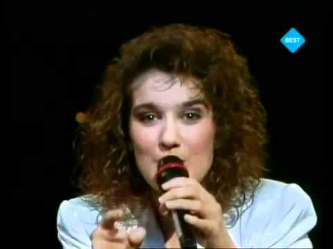

Geschichte
Der Eurovision Song Contest (kurz ESC) ist ein Gesangswettbewerb, bei dem seit 1956 verschiedene Länder gegeneinander antreten.
Seit dem 1. ESC in der Schweiz in 1956 wurde dieser jedes Jahr im Frühling, mit Ausnahme vom Jahr 2020 wegen der Coronapandemie, ausgetragen. Jedes Jahr überlegt sich das Land, welches diese Veranstaltung austrägt
einen Slogan und ein Logo. Dieses Jahr lautet der Slogan: "Open Up again". Seit 1956 sind viele weitere Länder dazugekommen und
manche nahmen nicht mehr teil. Von den anfänglichen 7 Ländern (Belgien, Schweiz, BRD, Frankreich, Italien, Luxemburg und Niederlande) sind es heutzutage knapp 40 und so nehmen auch
nicht-europäische Länder wie Australien, Israel oder Aserbaidschan am ESC teil.
Dabei hat Großbritannien den ESC am meisten ausgetragen und Irland hat mit insgesamt 6 Siegen am meisten gewonnen.
Deutschland hat in den 63 Jahren zweimal gewonnen: In 1982 mit dem Lied "Ein bisscehn Frieden" von Nicole und in 2010 mit dem Lied "Satelite" von Lena Meyer-Landrut.
Durch den ESC
wurden viele heute berühmte Musiker bekannt. Als Beispiele kann man hier Céline Dion, die Band ABBA oder Conchita Wurst nennen. Auch viele für uns bekannte Lieder sind Eurovision Lieder, so z.B.
"Dschinghis Khan" (1979), "Johnny Blue" (1981) oder "You Let Me Walk Alone" (2018) und auch viele deutsche Teilnehmer, wie Stefan Raab, Guildo Horn, Max Mutzke und viele weitere wurden bekannt.
In all den Jahren wurde in vielen verschiedenen Sprachen gesungen. Früher wurde viel mehr in den nationalen Sprachen gesungen und heutzutage sind es fast nur englische Songs. Frankreich,
Spanien, Italien oder Albanien sind Länder, die oft jedes Jahr in ihrer Sprache singen. Dieses Jahr sind es außerdem die Schweiz, Dänemark, Ukraine, außerdem haben Russland, Israel und Kroatien Teile ihrer
nationalen Sprache im Song. 2007 war das letzte Jahr, in dem Deutschland auf deutsch sang, damals trat Roger Cicero mit dem Lied "Frauen regier'n die Welt" an.
Neben dem ESC gibt es seit 2003 den Junior Eurovision Song Contest (JESC), in dem Kinder im Alter von 9 bis 14 Jahren ihre Länder repräsentieren dürfen. Seit 2020 macht Deutschland beim JESC mit.
Mehr Infos zum JESC
Liste aller Gewinner
 
Celine Dion
Lena Meyer-Landrut